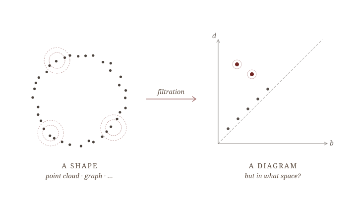
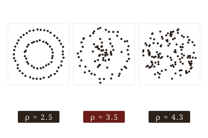
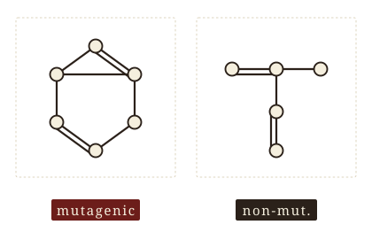
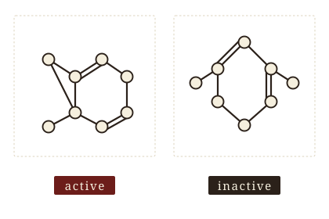
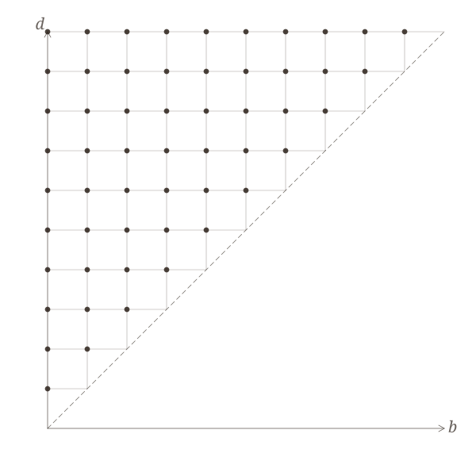
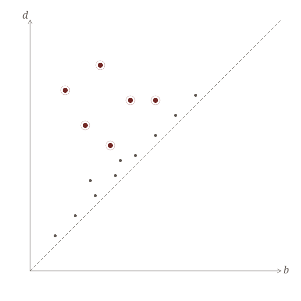

Persistence-Landmark Analytic Classification Engine
20 May 2026
| § | Article |
|---|---|
| I. | Motivation — stability · discriminability; the band that closes the gap. |
| II. | Construction — landmark grid, hat coordinates, closed-form weights. |
| III. | Theory — stability, the classification certificate, sharpness. |
| IV. | Experiments — MUTAG, NCI1, ENZYMES; where the certificate fires. |
| V. | The wider arc — PALACE, CASTLE, open questions. |
Or, from point clouds to certified classifiers — via topology.

An honest feature map lives in the band — bounded above (stability) and below (discriminability).
Given a labeled corpus of point clouds or graphs, learn a rule that predicts the label of a new instance.

ORBIT5K
‹5 000› synthetic point clouds; five classes from orbit dynamics on the torus. Canonical TDA point-cloud benchmark.

MUTAG
‹188› molecular graphs; mutagenic vs. non-mutagenic. Small, binary, clean.

NCI1
‹4 110› chemical compounds; active vs. inactive in a cancer-cell-line screen. Medium, binary, harder.
Every classical recipe begins the same way: turn each instance into a vector. The art is in how.
For a point cloud or a graph, four properties decide whether \Phi is a feature map worth the name:
Topology meets all four. The bill comes later. To follow →
Persistence diagrams: the multi-scale shape summary — isometry-invariant, GH-Lipschitz, dimension-aware.
PDs answer the call — but they live in the wrong space. ☞Embed
Embeddings of (\mathcal{D}, d_\mathcal{B}) abound — all bound distortion from one side only.
KERNELS
sliced-Wasserstein · persistence-Fisher · WKPI
Implicit RKHS map; Lipschitz in d_\mathcal{B}; no closed-form margin.
after Reininghaus ’15 · Kusano ’16 · Carrière ’17 · Le-Yamada ’18 · Zhao-Wang ’19
VECTORISATIONS
persistence images · landscapes
Explicit map; Lipschitz; hyper-parameters tuned on held-out data.
after Bubenik ’15 · Adams ’17
NEURAL-ON-PD
PersLay · Set Transformer
Strong empirically; opaque; bounds at best post-hoc.
after Hofer ’17 · Lee ’19 · Carrière ’20 · Zhao-Wang ’20
Stability without discriminability is a kind, lying microscope. ☞Bound from below
An honest embedding — bounded from both sides.
\Phi \colon (X, d) \to \mathcal{H} is a coarse embedding if there exist non-decreasing \rho_-, \rho_+ \colon [0, \infty) \to [0, \infty] with \rho_-(t) \to \infty, such that
\rho_-\bigl(d(x, y)\bigr) \;\leq\; \bigl\| \Phi(x) - \Phi(y) \bigr\|_\mathcal{H} \;\leq\; \rho_+\bigl(d(x, y)\bigr).
Mitra–Virk — existence in ’21 (via asymdim); explicit in ’24. ☞Use it
The grid, the hat, the analytic weight rule.

The landmark grid G_R on the birth–death plane — the scaffold that turns persistence into coordinates.
Pl. IV. The PLACE pipeline. ‹insert pipeline figure from Paper I — input · filtration · persistence · embedding · classify›. Each stage’s parameters are fixed analytically from training labels alone.
Place landmarks on a uniform lattice G_R \subset \mathbb{R}^2_{\geq} in the birth-death plane. Each landmark a owns a square d_\mathcal{B}-cover of side 3R (axis-aligned in the \ell_\infty metric).
For each landmark a \in G_R, define a compactly supported hat \varphi_{R,p}\colon \mathbb{R}^2 \to \mathbb{R}_{\geq 0} that vanishes outside a’s cover square. The PLACE coordinate of a diagram A is
\Phi_p(A) \;=\; \sum_{a \in A} \boldsymbol{\varphi}_{R,p}(a) \;\in\; \mathbb{R}^{|G_R|}.
Across the N scales, weight each scale’s contribution analytically:
w_k^2 \;\propto\; \dfrac{d_{k+1}^2 - d_k^2}{R_k^2}.
The weights w_k are the unique maximizer of the Mitra–Virk distortion slope \lambda(\nu) over the N-scale family, subject to the G_R-cover constraint. Proof: differentiate \lambda in w and set to zero — the constraint is convex.
This is the whole model selection step. There is no held-out validation, no Bayesian search, no random seeds.
Three quantitative claims: stability, certificate, sharpness.
‹ TODO: insert centroid-and-confidence-ball schematic from Paper I figure ›
For every pair of diagrams A, A' \in \mathcal{D}^n, \bigl\| \Phi(A) - \Phi(A') \bigr\|_2 \;\leq\; L \cdot d_\mathcal{B}(A, A'), with L = L(N, R, p) explicit and computed in closed form from the grid parameters.
Intuition. The hat is Lipschitz; summing Lipschitz functions over |A| matched pairs preserves Lipschitzness, with the constant accumulating only logarithmically over the geometric scale ladder.
Let \hat{\mu}_c be the empirical class centroid in \Phi-space and r_m the margin radius (closed form from training labels). For a test diagram A_\star, if \bigl\| \Phi(A_\star) - \hat{\mu}_c \bigr\|_2 \;<\; r_m, then the linear classifier outputs class c and the prediction is provably correct under the assumed noise model.
The certificate is per-input: it fires on some test diagrams and stays silent on others. No global accuracy claim is made when it stays silent.
Sharpness is governed by a single inequality: r_m < \Delta/2, where \Delta is the inter-class separation in \Phi-space.
The interesting question is empirical: on which datasets does the inequality hold for what fraction of test inputs? — § IV.
note for the talk: emphasise that silent ≠ wrong.
With probability \geq 1 - \delta, the empirical centroids and r_m converge to their population counterparts at rate n \;\geq\; O\bigl( L^2 \log(\ell/\delta) / \varepsilon^2 \bigr), where L is the stability constant, \ell = |G_R|, and \varepsilon is the desired margin slack.
Take-away. The cost of having a certificate is O(L^2 \log \ell) samples — modest, and entirely a function of grid choices.
Three datasets, one table, one honest qualifier.

A persistence diagram from MUTAG: H_1 features above the diagonal (oxblood), H_0 near it (ink).
MUTAG: certificate fires
| Dataset | Strongest baseline | + PLACE | Δ |
|---|---|---|---|
| MUTAG | ‹baseline› |
‹place› |
‹+Δ› pp |
| NCI1 | ‹baseline› |
‹place› |
‹+Δ› pp |
| ENZYMES | ‹baseline› |
‹place› |
‹+Δ› pp |
The classification certificate is a per-input statement. The fraction of test inputs on which it fires is itself a property of the dataset.
‹X›% of test diagrams certified — the canonical “small + well-separated” win.‹Y›% certified — sparser, but where it fires, it’s right.‹Z›% — the multi-class case; the certificate is silent on most of the ambiguous inputs.In every case the certified fraction has zero misclassifications.
The talk would be incomplete without the negative cases. Two patterns worth naming.
‹dataset›), the centroid model under-fits and PLACE trails the GNN baseline by ‹δ› pp.These limitations are part of the value proposition: PLACE knows when it doesn’t know.
Where PLACE sits in a longer programme.
‹ TODO: insert PALACE → CASTLE roadmap schematic ›
The shared scaffold is the Mitra–Virk landmark embedding; the three modules build on it without contradicting each other.
With thanks to Pramita Bagchi, Atish Mitra, Žiga Virk. ICERM TW-26-FCG · Brown University · 20 May 2026.
PLACE · S. Majhi · ICERM TW-26-FCG · Brown University · 20 May 2026